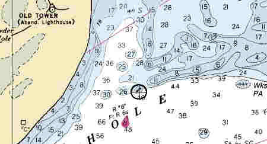

Link Index
MWDC
Home Page
Shipwrecks Page
Albert Galatin
Alice M. Colburn
Alice M. Lawrence
Ardandhu
Barge and Crane
California
Charles S. Haight
Chelsea
Chester Poling
City of Salisbury
Corvan
Dixie Sword
Edward Rich
French Van Gilder
Henry Endicott
Herbert
Herman Winter
Hilda Garston
HMCS St. Francis
James Longstreet
John Dwight
Kershaw
Kiowa
Lackawanna
Lunet
Mars
Pemberton
Pendleton
Pinthis
Port Hunter
Pottstown
Romance
Seaconnet
Trojan
USS Grouse
USS New Hampshire
USS Triana
USS Yankee
USS YSD
Vineyard Sound
Lightship
|
Description: Freighter; Steel
Dimensions: length - 324 ft. , width - 46.2 ft. ; depth - 25 ft.
Tonnage: gross - 3283, other -
Propulsion: Steam; Single propeller
Machinery: 1500 Shaft Horse Power, Double Reduction Geared Turbine; 2, oil fired Babcock and Wilcox Co., Water Tube Boilers; Cast Iron Hubbed, bronze bladed propeller
Cargo: 5000 tons, Zinc and Copper ore
The Shipwreck
Date Sunk:February 12, 1942
Cause:Foundered
Location: Monomoy, off Butler Hole, in the vicinity of buoy
"R 8".
Coordinates: Latitude, 41o-32"-58"N Longitude, 69o-58"-50"W
Loran: 13883.4 and 43902.2
The paper trail leading to the demise of the Dixie Sword is scant at best. Lost in the early months of the Second World War, the incident received no press coverage. It was rumored that she was torpedoed off Nantucket and sank while attempting to make shallow water. This story probably arose from the fact that news of her sinking was withheld from publication at the time of her loss. The standard practice back then was to censor news of local ship sinkings so as not to alarm the general public.
Official reports state the vessel foundered in a storm. Caught in heavy seas off Nantucket, the freighter began to take on water. In an attempt to make the safety of Nantucket Sound, her Captain steered toward shore but fouled a buoy in Pollock Rip Channel and sank off Butler Hole, Monomoy.
Back to Top
Dive Site Conditions
Depth in feet: maximum - 32; minimum -
Visibility in feet: average -
In the 1960's, noted wreck diver and author, Brad Luther wrote of many dives on the wreck. Back then much of the vessel remained above the sand, although most of her compartments had been filled.
Today, MetroWest Dive Club member, Pete Reagan, has done numerous drift dives in the area of the wreck and reports that she is completely sanded over.
Click on the image to go to the MapTech Map Server,
for additional navigation information.

Back to Top
Historical Background
Constructed: year - 1919; where - Newark, N.J.
builder - Submarine Boat Corporation.
Construction details: 1 continuos steel deck, 2nd deck at each end of ship; 6 Watertight Bulkheads to the freeboard deck, 1 Watertight Bulkhead to 2nd deck; 5 Hatches measuring 29'3'X18'; 4 Cargo Holds measuring 58 feet .
Crew: 37 ; Master:
Owners: Sword S.S. Line.
Home or Hailing Port: New York, N.Y.
Former Name(s) and date(s): Continental Bridge (1919), Point Fermin (1926),
Florida (1937)
Official number: 218945Country: U.S.A.
Other Comments: Yard No.69; Originally built for the United States Shipping Board; Purchased by Sword S.S. Line at U.S Marshal's sale, 1937, renamed Dixie Sword
Back to Top
Salvage
Treacherous currents made early salvage difficult. Unlike many other New England wrecks, the Dixie Sword's hull was not blown up for it's metal content.
1988-89 (?) - David Morreau of Dunn Corner, R.I., purchased salvage rights to the vessels cargo, from the underwriters "Cargo Salvage Corp." of New York, for 10% of what's recovered.
Back to Top
Sources:
Boston Globe; February 10, 1989
MapTech Mapserver
New England Shipwrecks; Luther, 1967
Ten Years at Ten Fathoms; Luther
The Record, "American Lloyds", American Bureau of Shipping; 1940
The Sun, Westerly, R.I.; February 14, 1989
University of Baltimore Library, S.S.H.S.A Collection.
Back to Top
These files are under construction. Any information, specifically dive site related, would be greatfully appreciated.
Send comments to: Chris Hugo
Copyright © 2000 by Christopher C. Hugo
Massachusetts Board of Underwater Archaeological Resources
All Rights Reserved
|